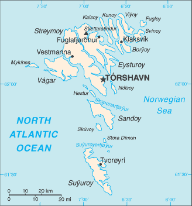

Europe :: FAROE ISLANDS
Introduction :: FAROE ISLANDS
-
The population of the Faroe Islands is largely descended from Viking settlers who arrived in the 9th century. The islands have been connected politically to Denmark since the 14th century. A high degree of self-government was granted the Faroese in 1948, who have autonomy over most internal affairs while Denmark is responsible for justice, defense, and foreign affairs. The Faroe Islands are not part of the European Union.
Geography :: FAROE ISLANDS
-
Northern Europe, island group between the Norwegian Sea and the North Atlantic Ocean, about halfway between Iceland and Norway62 00 N, 7 00 WEuropetotal: 1,393 sq kmland: 1,393 sq kmwater: 0 sq km (some lakes and streams)country comparison to the world: 183eight times the size of Washington, DC0 km1,117 kmterritorial sea: 3 nmcontinental shelf: 200 nm or agreed boundaries or median lineexclusive fishing zone: 200 nm or agreed boundaries or median linemild winters, cool summers; usually overcast; foggy, windyrugged, rocky, some low peaks; cliffs along most of coastlowest point: Atlantic Ocean 0 mhighest point: Slaettaratindur 882 mfish, whales, hydropower, possible oil and gasagricultural land: 2.1%arable land 2.1%; permanent crops 0%; permanent pasture 0%forest: 0.1%other: 97.8% (2011 est.)0 sq km (2011)NANAparty to: Marine Dumping - associate member to the London Convention and Ship Pollutionarchipelago of 17 inhabited islands and one uninhabited island, and a few uninhabited islets; strategically located along important sea lanes in northeastern Atlantic; precipitous terrain limits habitation to small coastal lowlands
People and Society :: FAROE ISLANDS
-
noun: Faroese (singular and plural)adjective: FaroeseScandinavianFaroese (derived from Old Norse), DanishEvangelical Lutheran 83.8%, other and unspecified 16.2% (2006 census)50,196 (July 2015 est.)country comparison to the world: 2110-14 years: 20.1% (male 5,224/female 4,866)15-24 years: 14.96% (male 3,848/female 3,662)25-54 years: 37.04% (male 10,090/female 8,502)55-64 years: 11.73% (male 3,033/female 2,854)65 years and over: 16.17% (male 3,926/female 4,191) (2015 est.)total: 37.7 yearsmale: 37.1 yearsfemale: 38.4 years (2014 est.)0.51% (2015 est.)country comparison to the world: 15613.77 births/1,000 population (2015 est.)country comparison to the world: 1478.71 deaths/1,000 population (2015 est.)country comparison to the world: 720 migrant(s)/1,000 population (2015 est.)country comparison to the world: 96urban population: 42% of total population (2015)rate of urbanization: 0.47% annual rate of change (2010-15 est.)TORSHAVN (capital) 21,000 (2014)at birth: 1.07 male(s)/female0-14 years: 1.07 male(s)/female15-24 years: 1.05 male(s)/female25-54 years: 1.19 male(s)/female55-64 years: 1.06 male(s)/female65 years and over: 0.94 male(s)/femaletotal population: 1.09 male(s)/female (2015 est.)total: 5.6 deaths/1,000 live birthsmale: 5.86 deaths/1,000 live birthsfemale: 5.32 deaths/1,000 live births (2015 est.)country comparison to the world: 174total population: 80.24 yearsmale: 77.73 yearsfemale: 82.93 years (2015 est.)country comparison to the world: 342.37 children born/woman (2015 est.)country comparison to the world: 844.7 beds/1,000 population (2012)NANANAtotal: 9.4%male: 6.9%female: 12.5% (2005 est.)country comparison to the world: 103
Government :: FAROE ISLANDS
-
conventional long form: noneconventional short form: Faroe Islandslocal long form: nonelocal short form: Foroyarpart of the Kingdom of Denmark; self-governing overseas administrative division of Denmark since 1948NAname: Torshavngeographic coordinates: 62 00 N, 6 46 Wtime difference: UTC 0 (5 hours ahead of Washington, DC, during Standard Time)daylight saving time: +1hr, begins last Sunday in March; ends last Sunday in Octobernone (part of the Kingdom of Denmark; self-governing overseas administrative division of Denmark); there are no first-order administrative divisions as defined by the US Government, but there are 34 municipalitiesnone (part of the Kingdom of Denmark; self-governing overseas administrative division of Denmark)Olaifest (Olavsoka), 29 July5 June 1953 (Danish Constitution), 23 March 1948 (Home Rule Act), and 24 June 2005 (Takeover Act ) serve as the Faroe Islands’ constitutional position in the Unity of the Realm (2013)the laws of Denmark, where applicable, apply18 years of age; universalchief of state: Queen MARGRETHE II of Denmark (since 14 January 1972), represented by High Commissioner Dan Michael KNUDSEN, chief administrative officer (since 2008)head of government: Prime Minister Kaj Leo JOHANNESSEN (since 26 September 2008)cabinet: Landsstyri appointed by the prime ministerelections/appointments: the monarchy is hereditary; high commissioner appointed by the monarch; following legislative elections, the leader of the majority party or majority coalition usually elected prime minister by the Faroese Parliament; election last held on 14 November 2011 (next to be held no later than November 2015)election results: Kaj Leo JOHANNESSEN (Kaj) reelected prime minister; Parliament vote - NAdescription: unicameral Faroese Parliament or Logting (33 seats; members directly elected in a single nationwide constituency by proportional representation vote; members serve 4-year terms)note: election of two seats to the Danish Parliament was last held on 15 September 2011 (next to be held no later than September 2015); percent of vote by party - NA; seats by party - Social Democratic Party 1, Union Party 1elections: last held on 1 September 2015 (next to be held no later than October 2019)election results: percent of vote by party - Social Democratic Party 25.1%, Republic 20.8%, People's Party, 18.9%, Union Party 18.8%, Progressive Party 7.0%, Center Party 5.5%, Independence Party 4.0%; seats by party - Social Democratic Party 8, Republic 7, People's Party 6, Union Party 6, Progressive Party 2, Center Party 2, Independence Party 2the Faroese Court or Raett (Rett - Danish) decides both civil and criminal cases; the Court is part of the Danish legal systemCenter Party (Midflokkurin) [Jenis av RANA]Independence Party (Sjalvstyrisflokkurin) [Jogvan SKORHEIM]People's Party (Folkaflokkurin) [Jorgen NICLASEN]Progressive Party (Framsokn) [Poul MICHELSEN]Republic (Tjodveldi) (formerly the Republican Party) [Hogni HOYDAL]Social Democratic Party (Javnadarflokkurin) [Aksel JOHANNESEN]Union Party (Sambandsflokkurin) [Kaj Leo JOHANNESEN]other: conservationistsArctic Council, IMO (associate), NC, NIB, UNESCO (associate), UPUnone (self-governing overseas administrative division of Denmark)none (self-governing overseas administrative division of Denmark)white with a red cross outlined in blue extending to the edges of the flag; the vertical part of the cross is shifted toward the hoist side in the style of the Dannebrog (Danish flag); referred to as Merkid, meaning "the banner" or "the mark," the flag resembles those of neighboring Iceland and Norway, and uses the same three colors - but in a different sequence; white represents the clear Faroese sky as well as the foam of the waves; red and blue are traditional Faroese colorsram; national colors: red, white, bluename: "Mitt alfagra land" (My Fairest Land)lyrics/music: Simun av SKAROI/Peter ALBERGnote: adopted 1948; the anthem is also known as "Tu alfagra land mitt" (Thou Fairest Land of Mine); as an autonomous overseas division of Denmark, the Faroe Islands are permitted their own national anthem
Economy :: FAROE ISLANDS
-
The Faroese economy is dependent on fishing, which makes the economy vulnerable to price fluctuations. The sector normally accounts for about 95% of exports and nearly half of GDP. In early 2008 the Faroese economy began to slow as a result of smaller catches and historically high oil prices. The slowdown in the Faroese economy followed a strong performance since the mid-1990s with annual growth rates averaging close to 6%, mostly a result of increased fish landings and salmon farming, and high export prices. Unemployment reached its lowest level in June 2008 at 1.1% but gradually increased to about 5.5% in 2012. Total dependence on fishing and salmon farming make the Faroese economy vulnerable to fluctuations in world demand. Initial discoveries of oil in the Faroese area give hope for eventual oil production, which may provide a foundation for a more diversified economy and less dependence on Danish economic assistance. Aided by an annual subsidy from Denmark amounting to about 3% of Faroese GDP, the Faroese have a standard of living almost equal to that of Denmark and Greenland. The Faroese Government ran relatively large deficits from 2008 to 2010 and budget deficits are forecast for several years ahead. At year-end 2010 gross external debt had reached approximately US$900 million.$1.471 billion (2010 est.)$1.389 billion (2008 est.)country comparison to the world: 198$2.32 billion (2010 est.)2.9% (2010 est.)0.5% (2008 est.)country comparison to the world: 116$30,500 (2008 est.)country comparison to the world: 55agriculture: 16%industry: 29%services: 55% (2007 est.)milk, potatoes, vegetables; sheep; salmon, other fishfishing, fish processing, small ship repair and refurbishment, handicrafts3.4% (2009 est.)country comparison to the world: 8634,710 (November 2010)country comparison to the world: 203agriculture: 10.7%industry: 18.9%services: 70.3% (November 2010)5.5% (2012)6.8% (2011)country comparison to the world: 56NA%lowest 10%: NA%highest 10%: NA%revenues: $1.025 billionexpenditures: $1.301 billionnote: Denmark supplies the Faroe Islands with almost one-third of their public funds (2010 est.)44.2% of GDP (2010 est.)country comparison to the world: 26-11.9% of GDP (2010 est.)country comparison to the world: 206calendar year2.3% (2011)0.4% (2010)country comparison to the world: 108$824 million (2010)$767 million (2009)country comparison to the world: 166fish and fish products 94%, stamps, ships (2009 est.)UK 25.2%, Denmark 20.2%, Nigeria 12.8%, US 11.1%, Netherlands 5.8%, Russia 5.7%, China 5.7% (2013)$776 million (2010)$786 million (2009)country comparison to the world: 186goods for household consumption, machinery and transport equipment, fuels, raw materials and semi-manufactures, saltDenmark 47.9%, Norway 28%, Iceland 5.2%, Germany 4.2% (2013)$888.8 million (2010)$68.1 million (2006)country comparison to the world: 166Danish kroner (DKK) per US dollar -5.587 (2011)5.3687 (2011)5.79 (2012 est.)5.3687 (2011 est.)5.6241 (2010 est.)
Energy :: FAROE ISLANDS
-
261 million kWh (2011 est.)country comparison to the world: 181242.7 million kWh (2011 est.)country comparison to the world: 1840 kWh (2013 est.)country comparison to the world: 1400 kWh (2013 est.)country comparison to the world: 147100,100 kW (2011 est.)country comparison to the world: 17464.9% of total installed capacity (2011 est.)country comparison to the world: 1230% of total installed capacity (2011 est.)country comparison to the world: 9031% of total installed capacity (2011 est.)country comparison to the world: 744.1% of total installed capacity (2011 est.)country comparison to the world: 580 bbl/day (2013 est.)country comparison to the world: 1740 bbl/day (2010 est.)country comparison to the world: 1130 bbl/day (2010 est.)country comparison to the world: 1860 bbl (1 January 2014 est.)country comparison to the world: 1340 bbl/day (2010 est.)country comparison to the world: 1444,900 bbl/day (2013 est.)country comparison to the world: 1690 bbl/day (2010 est.)country comparison to the world: 1774,661 bbl/day (2010 est.)country comparison to the world: 1570 cu m (2012 est.)country comparison to the world: 1320 cu m (2012 est.)country comparison to the world: 1440 cu m (2012 est.)country comparison to the world: 980 cu m (2012 est.)country comparison to the world: 1940 cu m (1 January 2014 est.)country comparison to the world: 139753,400 Mt (2012 est.)country comparison to the world: 173
Communications :: FAROE ISLANDS
-
total subscriptions: 17,300subscriptions per 100 inhabitants: 35 (2014 est.)country comparison to the world: 189total: 61,400subscriptions per 100 inhabitants: 123 (2014 est.)country comparison to the world: 199general assessment: good international communications; good domestic facilitiesdomestic: conversion to digital system completed in 1998; both NMT (analog) and GSM (digital) mobile telephone systems are installedinternational: country code - 298; satellite earth stations - 1 Orion; 1 fiber-optic submarine cable to the Shetland Islands, linking the Faroe Islands with Denmark and Iceland; fiber-optic submarine cable connection to Canada-Europe cable (2011)1 publicly owned TV station; the Faroese telecommunications company distributes local and international channels through its digital terrestrial network; publicly owned radio station supplemented by 2 privately owned stations broadcasting over multiple frequencies (2008)AM 1, FM 13, shortwave 0 (1998)3 (plus 43 repeaters) (September 1995).fototal: 44,000percent of population: 88.2% (2014 est.)country comparison to the world: 188
Transportation :: FAROE ISLANDS
-
1 (2013)country comparison to the world: 217total: 11,524 to 2,437 m: 1 (2013)total: 463 km (2006)country comparison to the world: 197total: 37by type: cargo 20, chemical tanker 7, container 2, passenger/cargo 3, refrigerated cargo 3, roll on/roll off 2foreign-owned: 28 (Iceland 4, Norway 13, Sweden 11) (2010)country comparison to the world: 79major seaport(s): Fuglafjordur, Torshavn, Vagur
Military :: FAROE ISLANDS
-
no regular military forces (2012)males age 16-49: 11,831 (2010 est.)males age 16-49: 9,827females age 16-49: 8,418 (2010 est.)male: 372female: 373 (2010 est.)defense is the responsibility of Denmark
Transnational Issues :: FAROE ISLANDS
-
because anticipated offshore hydrocarbon resources have not been realized, earlier Faroese proposals for full independence have been deferred; Iceland, the UK, and Ireland dispute Denmark's claim that the Faroe Islands' continental shelf extends beyond 200 nm